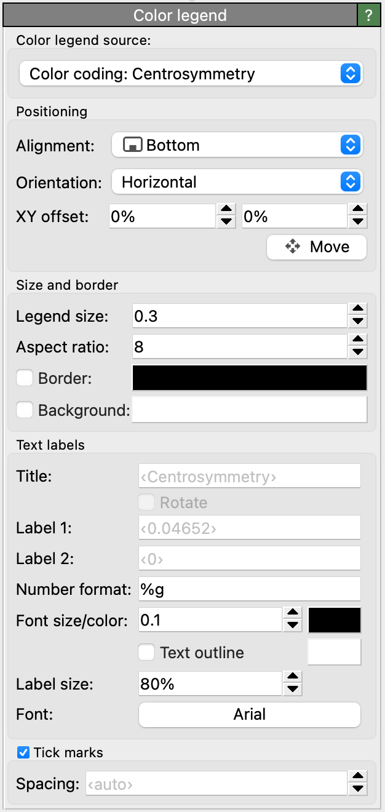

Color legend layer
{kind=link}
This viewport layer renders the color scale for a Color coding modifier
or displays the discrete colors associated with a typed property.
The following figure shows two typical examples of color legends: A color map for a continuous particle property
and a discrete color legend for the Particle Type property:
{kind=link}
Color source
The selected Color legend source determines where the legend takes its colors from. In the current program version, three types of sources are available in the drop-down list:
- Color coding modifier
If the current data pipeline contains a Color coding modifier, the legend can display its gradient and min/max value interval.
- Typed properties
Alternatively, the legend can display a list of discrete element types associated with a typed property in the data pipeline’s output. Typical examples are the particle properties
Particle Type,Structure TypeorResidue Type. The legend will display the name and color of each type defined for the selected source property.Note
Note that the color legend layer itself is not responsible for coloring the particles or bonds. It may be necessary to insert a Color by type modifier into the pipeline to actually give particles and bonds their corresponding colors.
- Pseudo color mappings
Some visual elements provide an option to color objects or surfaces based on a local property. If such a color mapping function has been activated for some visual element in the scene, it can be selected as the source of the color legend layer.
Options
The color legend layer provides parameters that let you control its size, positioning, and appearance in the rendered picture. By default, the legend will be labeled with the name of the source property and, if based on a Color coding modifier, the numeric range set for that modifier. You can override the text of the labels by entering it into the input fields Title and Label 1/Label 2.
Tip
You can include HTML markup elements in the labels to format the text, e.g., to produce special notations such as superscripts or subscripts. See HTML text formatting for further information.
If the legend displays a min/max range, the numeric format of the limits is controlled by a format specification string.
You have the choice between decimal notation (%f), exponential notation (%e), and an
automatic mode (%g), which picks the best representation depending on the value’s magnitude.
The format string also gives you explicit control over the displayed numeric precision, i.e., the number of digits that
appear after the decimal point. Use %.2f, for example, to always show two digits after the decimal point.
The format string must follow the rules of the standard printf() C function.
Tip
You can also include physical units or other literal text in the number format string, e.g., %g eV.
The literal parts of the format string will then be copied to the numeric labels.
Tick marks can be added to the color legend by checking the Tick marks box. By default, OVITO places the ticks automatically, but you can take manual control of the tick spacing by entering a value into the Spacing field. The first tick gets placed at the next integer multiple of the tick spacing which is greater than the lower limit of the current value range. The total number of ticks is currently limited to 100 by OVITO.
See also
ovito.vis.ColorLegendOverlay (Python API)